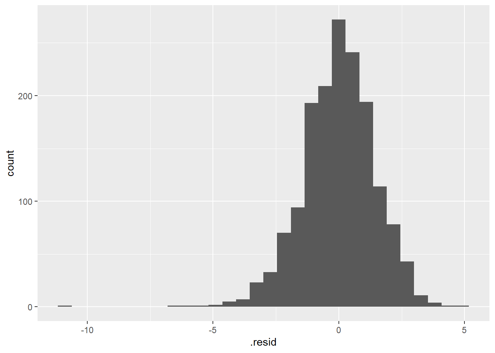
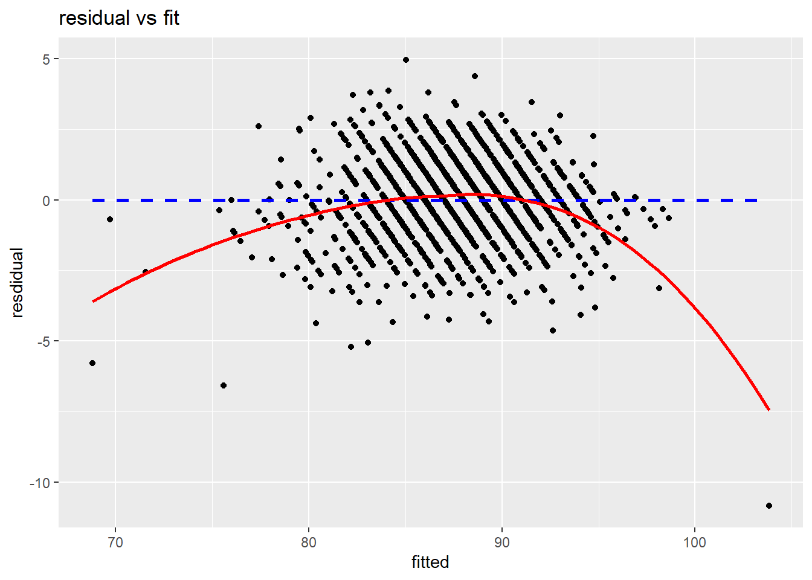
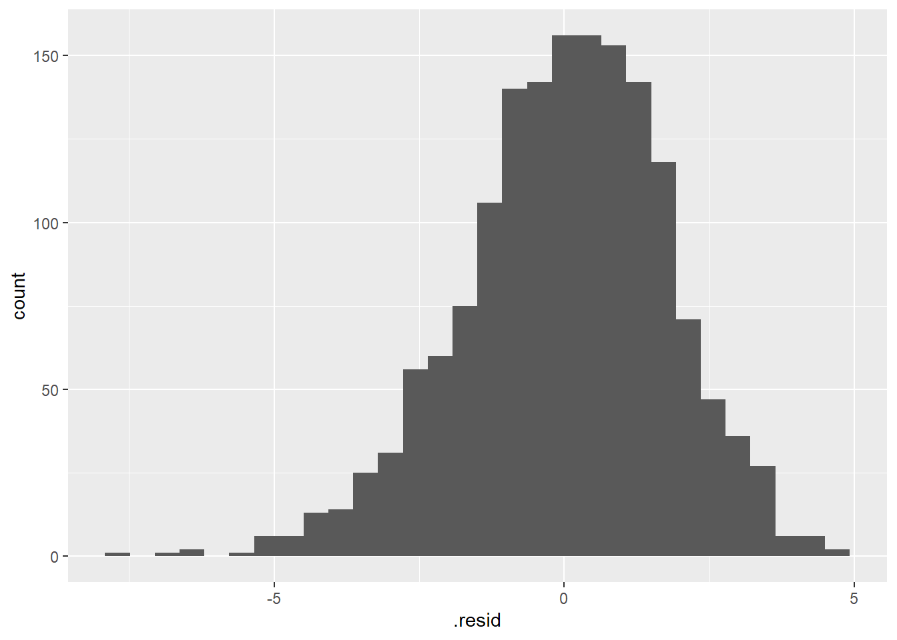
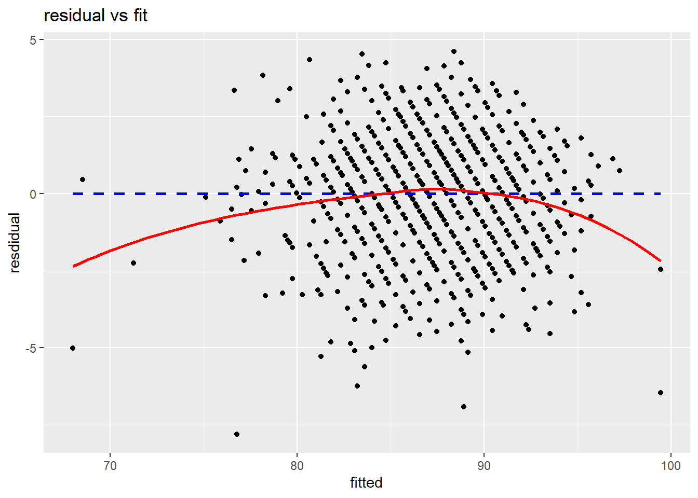
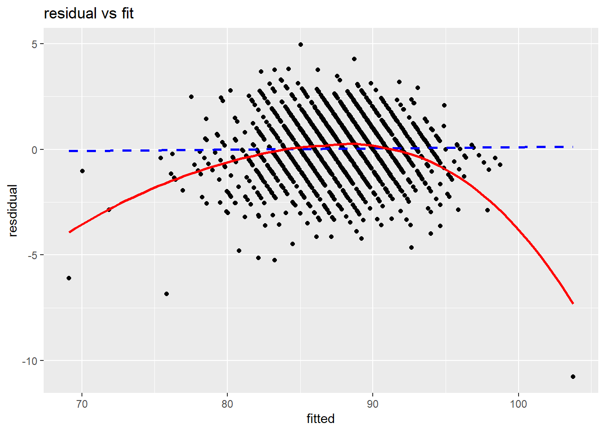
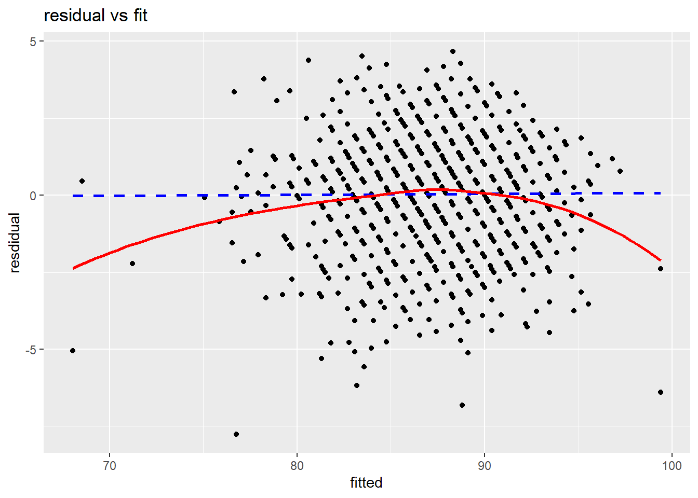

#remove zip code?, parish, telephone number, number of completed surverys footnote,number of completed surverys footnote, additional footnote, state, end date
#label load packages & import data
library(readr)
library(tidyverse)
library(lubridate)
here::i_am("Project1.qmd")
hosp <- read_csv(here::here("HCAHPS-Hospital.csv"),na=c("Not Available","Not Applicable"))portfoliowebsite
I think this works
Data Wrangling
section explanation
#Taking out stuff we don't want
hosp2<-hosp|>
select(!(c("State","Telephone Number","Address","County/Parish","Number of Completed Surveys","Number of Completed Surveys Footnote","Survey Response Rate Percent","Start Date","End Date"))) #patient star rating
hstar<-hosp2|>
select(!(c("HCAHPS Answer Percent","HCAHPS Linear Mean Value")))|>
filter(!is.na(`Patient Survey Star Rating`))
#Answer percent
hpercent<-hosp2|>
select(!(c("Patient Survey Star Rating","HCAHPS Linear Mean Value")))|>
filter(!is.na(`HCAHPS Answer Percent`))
#linear mean value
hmean<-hosp2|>
select(!(c("HCAHPS Answer Percent","Patient Survey Star Rating")))|>
filter(!is.na(`HCAHPS Linear Mean Value`))#pivot our HCAHPS COL to get less rows
hstar<-hstar|>
pivot_wider(
id_cols=`Facility ID`,
names_from = `HCAHPS Answer Description`,
values_from = `Patient Survey Star Rating`
)
hpercent<-hpercent|>
pivot_wider(
id_cols=`Facility ID`,
names_from = `HCAHPS Answer Description`,
values_from = `HCAHPS Answer Percent`
)
hmean<-hmean|>
pivot_wider(
id_cols=`Facility ID`,
names_from = `HCAHPS Answer Description`,
values_from = `HCAHPS Linear Mean Value`
) library(dplyr)
# Step 2: Convert to numeric safely
hmean$`Overall hospital rating - linear mean score` <- as.numeric(
as.character(hmean$`Overall hospital rating - linear mean score`)
)#Cleaning names
hmeanc<-hmean|>
mutate(
Nurse_comm =`Nurse communication - linear mean score`,
Doctor_comm =`Doctor communication - linear mean score`,
Staff_resp =`Staff responsiveness - linear mean score`,
Med_comm =`Communication about medicines - linear mean score`,
disc_info = `Discharge information - linear mean score`,
care_trans =`Care transition - linear mean score`,
cleanliness = `Cleanliness - linear mean score`,
quietness = `Quietness - linear mean score`,
overall_rating = `Overall hospital rating - linear mean score`,
rec_rating = `Recommend hospital - linear mean score`
)
hmeanc$`Nurse communication - linear mean score` <- NULL
hmeanc$`Doctor communication - linear mean score` <- NULL
hmeanc$`Staff responsiveness - linear mean score` <- NULL
hmeanc$`Communication about medicines - linear mean score` <- NULL
hmeanc$`Discharge information - linear mean score` <- NULL
hmeanc$`Care transition - linear mean score` <- NULL
hmeanc$`Cleanliness - linear mean score` <- NULL
hmeanc$`Quietness - linear mean score` <- NULL
hmeanc$`Overall hospital rating - linear mean score` <- NULL
hmeanc$`Recommend hospital - linear mean score` <- NULLEda
section explanation
plot1<- ggplot(data = hmeanc,
mapping = aes(
x = Staff_resp,
y = overall_rating
)) +
geom_point() +
geom_smooth(method = "lm", color = "darkblue",
linetype = "dashed", se = FALSE) +
geom_smooth(method = "loess", color = "darkred", se = FALSE) +
labs(
title = "Explanatory vs Overall rating",
x = "Staff Responsiveness",
y = "Overall Rating"
)+theme(plot.title = element_text(size = 7))+ theme(
axis.title.x = element_text(size = 7),
axis.title.y = element_text(size = 7) )Made plot 1, repeated same steps for plots 2-8 only changing my y variable, cycling
(plot1+plot2+plot3+plot4+plot5+plot6+plot7+plot8)
Model Selection
section explanation
set.seed(17)
hmeanc_split <- hmeanc |>
initial_split(
prop=0.50
)
hmeanc_training<- training(hmeanc_split)
hmeanc_test <- testing(hmeanc_split)lmall <-lm(
overall_rating~ Nurse_comm + Doctor_comm + Staff_resp + Med_comm + disc_info + care_trans + cleanliness + quietness,
data = hmeanc_test
)
tidy(lmall)# A tibble: 9 × 5
term estimate std.error statistic p.value
<chr> <dbl> <dbl> <dbl> <dbl>
1 (Intercept) -18.1 1.86 -9.76 6.83e-22
2 Nurse_comm 0.375 0.0374 10.0 6.31e-23
3 Doctor_comm 0.132 0.0262 5.03 5.60e- 7
4 Staff_resp 0.0350 0.0162 2.15 3.16e- 2
5 Med_comm -0.0556 0.0166 -3.35 8.34e- 4
6 disc_info 0.0525 0.0159 3.30 1.00e- 3
7 care_trans 0.523 0.0268 19.5 7.00e-76
8 cleanliness 0.0952 0.0103 9.26 6.25e-20
9 quietness 0.0756 0.00908 8.32 1.83e-16lmcomm <-glm(
overall_rating~Nurse_comm + Doctor_comm ,
data = hmeanc_test
)
lmall <-glm(
overall_rating~Nurse_comm + Doctor_comm + Staff_resp + Med_comm + disc_info + care_trans + cleanliness + quietness ,
data = hmeanc_test
)
lmnull <-glm(
overall_rating~1 ,
data = hmeanc_test
)
tidy(lmcomm)# A tibble: 3 × 5
term estimate std.error statistic p.value
<chr> <dbl> <dbl> <dbl> <dbl>
1 (Intercept) -29.4 1.51 -19.4 2.10e- 75
2 Nurse_comm 0.907 0.0278 32.7 7.05e-180
3 Doctor_comm 0.381 0.0281 13.5 1.33e- 39tidy (lmall)# A tibble: 9 × 5
term estimate std.error statistic p.value
<chr> <dbl> <dbl> <dbl> <dbl>
1 (Intercept) -18.1 1.86 -9.76 6.83e-22
2 Nurse_comm 0.375 0.0374 10.0 6.31e-23
3 Doctor_comm 0.132 0.0262 5.03 5.60e- 7
4 Staff_resp 0.0350 0.0162 2.15 3.16e- 2
5 Med_comm -0.0556 0.0166 -3.35 8.34e- 4
6 disc_info 0.0525 0.0159 3.30 1.00e- 3
7 care_trans 0.523 0.0268 19.5 7.00e-76
8 cleanliness 0.0952 0.0103 9.26 6.25e-20
9 quietness 0.0756 0.00908 8.32 1.83e-16tidy(lmnull)# A tibble: 1 × 5
term estimate std.error statistic p.value
<chr> <dbl> <dbl> <dbl> <dbl>
1 (Intercept) 87.5 0.0961 911. 0hmeanc_pred1<- lmall |>
augment( newdata = hmeanc_test
)
head(hmeanc_pred1)# A tibble: 6 × 12
`Facility ID` Nurse_comm Doctor_comm Staff_resp Med_comm disc_info care_trans
<chr> <dbl> <dbl> <dbl> <dbl> <dbl> <dbl>
1 010005 90 92 77 76 87 81
2 010006 89 89 76 70 83 76
3 010007 94 95 89 83 92 82
4 010019 93 93 86 78 87 83
5 010023 90 90 84 75 87 80
6 010029 93 93 84 79 87 83
# ℹ 5 more variables: cleanliness <dbl>, quietness <dbl>, overall_rating <dbl>,
# rec_rating <dbl>, .fitted <dbl>hmeanc_pred1<-hmeanc_pred1|>
mutate(.resid=overall_rating-.fitted)
ggplot(
data = hmeanc_pred1,
mapping= aes(x=.resid)
)+
geom_histogram()`stat_bin()` using `bins = 30`. Pick better value with `binwidth`.
ggplot(data = hmeanc_pred1,
mapping = aes(
x = .fitted,
y = .resid
)) +
geom_point() +
geom_smooth(method = "lm", color = "blue",
linetype = "dashed", se = FALSE) +
geom_smooth(method = "loess", color = "red", se = FALSE) +
labs(
title = "residual vs fit",
x = "fitted",
y = "resdidual")`geom_smooth()` using formula = 'y ~ x'
`geom_smooth()` using formula = 'y ~ x'
hmeanc_pred2<- lmcomm |>
augment( newdata = hmeanc_test)
head(hmeanc_pred2)# A tibble: 6 × 12
`Facility ID` Nurse_comm Doctor_comm Staff_resp Med_comm disc_info care_trans
<chr> <dbl> <dbl> <dbl> <dbl> <dbl> <dbl>
1 010005 90 92 77 76 87 81
2 010006 89 89 76 70 83 76
3 010007 94 95 89 83 92 82
4 010019 93 93 86 78 87 83
5 010023 90 90 84 75 87 80
6 010029 93 93 84 79 87 83
# ℹ 5 more variables: cleanliness <dbl>, quietness <dbl>, overall_rating <dbl>,
# rec_rating <dbl>, .fitted <dbl>hmeanc_pred2<-hmeanc_pred2|>
mutate(.resid=overall_rating-.fitted)
ggplot(
data = hmeanc_pred2,
mapping= aes(x=.resid)
)+
geom_histogram()`stat_bin()` using `bins = 30`. Pick better value with `binwidth`.
ggplot(data = hmeanc_pred2,
mapping = aes(
x = .fitted,
y = .resid
)) +
geom_point() +
geom_smooth(method = "lm", color = "blue",
linetype = "dashed", se = FALSE) +
geom_smooth(method = "loess", color = "red", se = FALSE) +
labs(
title = "residual vs fit",
x = "fitted",
y = "resdidual"
)`geom_smooth()` using formula = 'y ~ x'
`geom_smooth()` using formula = 'y ~ x'
hmeanc_pred3<- lmnull |>
augment( newdata = hmeanc_test
)
head(hmeanc_pred3)# A tibble: 6 × 12
`Facility ID` Nurse_comm Doctor_comm Staff_resp Med_comm disc_info care_trans
<chr> <dbl> <dbl> <dbl> <dbl> <dbl> <dbl>
1 010005 90 92 77 76 87 81
2 010006 89 89 76 70 83 76
3 010007 94 95 89 83 92 82
4 010019 93 93 86 78 87 83
5 010023 90 90 84 75 87 80
6 010029 93 93 84 79 87 83
# ℹ 5 more variables: cleanliness <dbl>, quietness <dbl>, overall_rating <dbl>,
# rec_rating <dbl>, .fitted <dbl>hmeanc_pred3<-hmeanc_pred3|>
mutate(.resid=overall_rating-.fitted)
ggplot(
data = hmeanc_pred3,
mapping= aes(x=.resid)
)+
geom_histogram()`stat_bin()` using `bins = 30`. Pick better value with `binwidth`.
ggplot(data = hmeanc_pred3,
mapping = aes(
x = overall_rating,
y = .resid
)) +
geom_point() +
labs(
title = "residual vs fit",
x = "overall rating",
y = "resdidual"
)
Project Limitations & Constraints
This subsection should describe potential limitations of the conclusion and/or future work that someone might consider doing to expand on your analysis. Some limitations to discuss might include:
What are the real-world consequences of using your data or models? What are the consequences of an incorrect conclusion or prediction?
How appropriate was the data you used to answer your question? Consider aspects of validity (variables actually measure what you think they describe) and reliability (variable values would likely be similar if they were measured again).